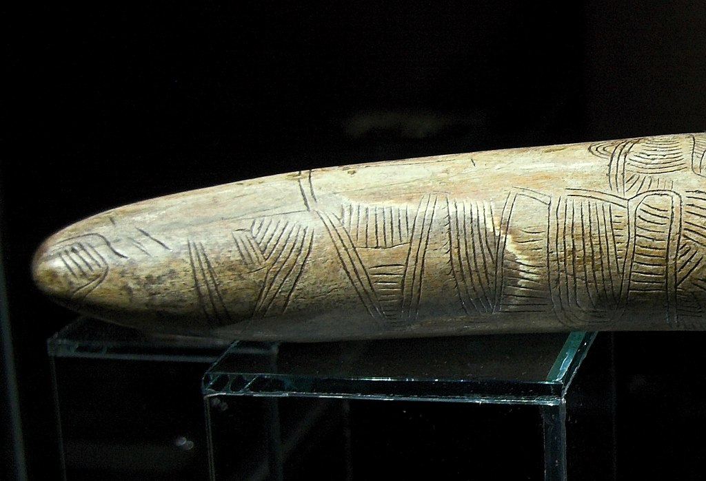
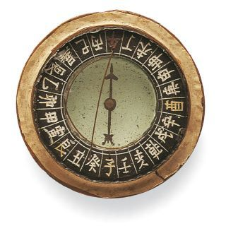
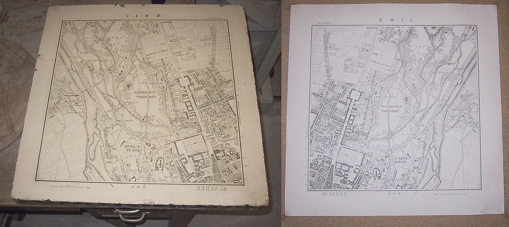
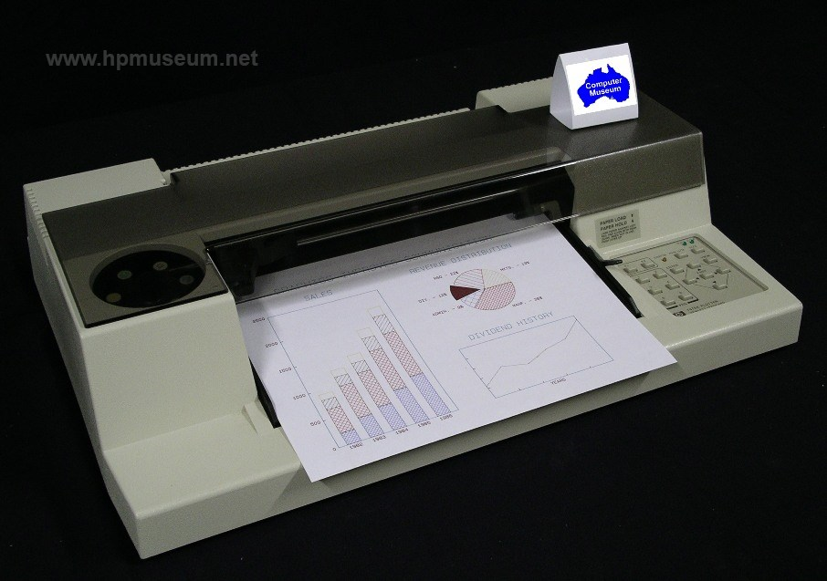
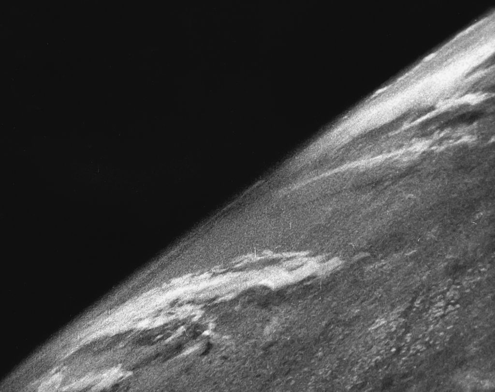

Tech: Now and Then

January 26th, 2021

A map of the world, which took a little while to map out.
Finding your way around anything is insanely important. How will you do anything or accomplish a basic task if you don't know where things are or where you're going? Many people have tried to answer that question in the form of maps. Maps are essentially something that tells the reader what is around them and where to go to go where the reader wants to. Where did we come up with the ingenious idea of doing this? Well, we did so in the early years of man to map the stars with the carvings and cave paintings.
A tusk carving with a slight map.
The oldest map that has been found is on this tusk, carved in most likely with a rock, depicts a scene of a river, mountains, valleys, and routes. This map dates back to 25,000 BCE. The next oldest map is found in the caves of Lauscaux, France. Some people from 14,500 BCE decided to dot the walls to map out the night sky in the cave, which is what remains today. The next major advancement in mapping technology comes from the Chinese, who developed an incredibly useful tool that would always be able to tell the direction to anyone...
A compass that looks similar to the compass first invented by the Chinese.
The compass above was the first magnetic compass that the Chinese invented in around the 1st century, but wasn't used for navigation until the 10/11th century. It was magnetized by the needle being made of lodestone that would point North no matter what. These initial compasses were used for fortune telling and geomancy, or fortune telling by using soil. Once its true nature was found, it was incredibly useful back then. You could easily navigate around without using stars to guide you, and they made consistent directions useful. They even started to use these on maps, creating the cardinal directions. As you can see, originally there were many more directions than the directions that we use today. Now, how would we mass produce these?
The next major advancement was the printing press, which allowed people to make a stencil of whatever they wanted (books, papers, letters, etc.), but in a map's case, there was no more measuring or guessing when reproducing a map. Maps could just be copied without much trouble, making maps much more mainstream due to its ease. Then, the sextant and quadrant came along to help with very precise measurements to perfectly draw something, as it allowed the cartographer to measure something over a distance to transcribe. The only issue with all of this was that these maps were falling apart over time due to wear and tear. There was an eventual fix for that though...
A lithograph that's a map of a town with fine details. It has its opposing piece of paper that is a mirrored version of the image to imprint.
Lithography is the process of printing based on the perfect mixing of water and oil on certain surfaces, like limestone and steel. Lithography exploits this quality by covering the surface in water, then putting an oil-based ink on top of it. After that, the paper containing the image that is being copied would be applied, and the stone would get the perfect reflection of that image with absolutely no flaws. This technique made copying maps with very fine details much easier, as they could be captured without the ink bleeding or not covering the stencil with ordinary paper. This helped with maps in ships and government buildings, but this didn't help the common man due to the process of lugging around a giant stone or sheet of metal being incredibly difficult. That's why photography was used.
Photography is something that we all know. An image, like a map, would be applied to film to get the fine points of the image. Then, the film would be put in a darkroom with a safelight to dry, and then it would be able to put onto another piece of paper or imprintable material. This was much easier than lithography, and lithography soon fell out of style once the photographic process became much easier. Now, let's go to modern times.
An HP electronic plotter. It's essentially a giant printer.
Printing technology, such as with scanners, plotters, screens, and printers, became much more advanced over time. They could easily make a map of something within seconds and could even be done remotely. The most advanced ones used by major companies are plotters. Plotters use an internal pencil to sketch out drawings pixel-by-pixel, which means that they maintain a much higher quality than the average laser-ink printer. They can also print on many materials other than paper, like plywood, aluminum, sheet metal, cardboard, and plastic.
This is the first image from space, taken on the V-2 rocket launched by the U.S.
The last major advancements are the uses of aerial and satellite photography. Aerial photography allowed people to take pictures of a lot of land to easily document, and satellite photography accelerated this. Maps could now be constructed from images directly taken from cameras, and an algorithm could sort them automatically and construct an entire map of the world. That's where it pretty much ends. These maps can also be made 3-dimensional, as demonstrated by Microsoft Flight Simulator 2020, but other than that there's no other advancements.